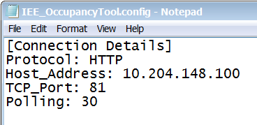

Installing and Configuring the IEE Occupancy Tool Adapter
You can install the adapter software service on any networked computer that can connect to the IEE Occupancy Tool system and to Desigo CC. Typically, you can install it on the Desigo CC server station.
- After installation, the IEEOccupancyTool_Adapter.msi is available in
[Installation Drive]:\[Installation Folder]\GMSMainProject\AddSW\IEEOccupancyTool locally or over the network. - You know the IP address of the IEE Occupancy Tool system.
- Run IEEOccupancyTool_Adapter.msi.
- Follow the wizard instructions to complete the installation.
- Open the installation folder and locate the IEE_OccupancyTool.config file.
- Edit the IEE_OccupancyTool.config file with Notepad or any other text editor.
- In [Connection Details], enter the following parameters:
- Protocol (applied between the adapter and the IEE Occupancy Tool system): HTTP or HTTPS
- Host Address of the IEE Occupancy Tool system
- TCP Port of the IEE Occupancy Tool system
- Polling frequency in seconds. Default is 30. - Save the file.

- In the same folder, edit the IEE_OccupancyTool.Points_Configuration.CSV file with Excel, Notepad or any other text editor. This is a comma-separated file organized in three columns: ID, ZoneID, and Description. Based on the information to acquire from the IEE Occupancy Tool, add the zones (ID and Description) and sensors (ID, Zone ID, and Description). For example:
ID,ZoneID,Description
5,,Zone_A
2,,Zone_B
1,5,Sensor_1
3,5,Sensor_2
4,2,Sensor_3 - Start the Windows service.
In the same folder, do one of the following: - (Recommended) Prepare and start the Install_AdapterAsService_HTTPS batch file to run the HTTPS service on port 443. Proceed as follows:
- Create the self-signed certificate for the IEE Occupacy web site.
- Using the Microsoft Management Console, get the certificate thumbprint.
- Edit Install_AdapterAsService_HTTPS.bat and insert the thumbprint after “-secure”. For example:
…-secure:40f0329e31f85466cae9ec1507f7e6318589fd77…
- Start the batch file. - (Not recommended) Start the Install_AdapterAsService_HTTP batch file to run the HTTP service on port 8080.
- The adapter service starts with the new configuration.
NOTE: You can run Uninstall_AdapterAsService.bat to uninstall the service of the Adapter.

The use of HTTPS protocol is strongly recommended to ensure a secure communication over public networks. Failing to use HTTPS increases the vulnerability to cyberattacks when using an open or badly secured network.
After the upgrade of this extension, the adapter must be manually upgraded by running the adapter MSI file, and then selecting the upgrade option.

For more details about certificates, in SORIS, see Secure Communication.